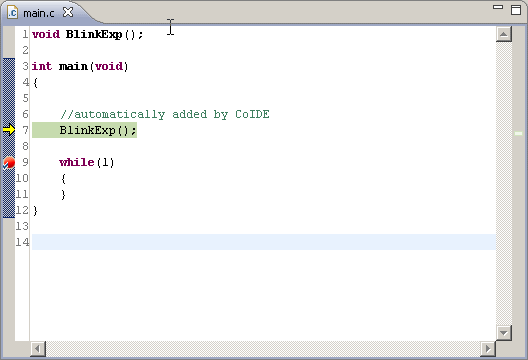

Editor View
The C/C++ editor provides specialized features for editing C/C++ related files.

Associated with the editor is a C/C++-specific Outline view, which shows the structure of the active C, C++ . It will update when you edit these files.
The editor includes the following features:
- Syntax highlighting
- Content/code assist
- Integrated debugging features
The most common way to invoke the C/C++ editor is to open a file from the Project Explorer by clicking the file (single or double-click depending on the user preferences).
The C/C++ editor does not contain a toolbar itself, but relies on the use of the context menu (right click your mouse in the editor view , the context menu will be presented) and key binding actions.
|